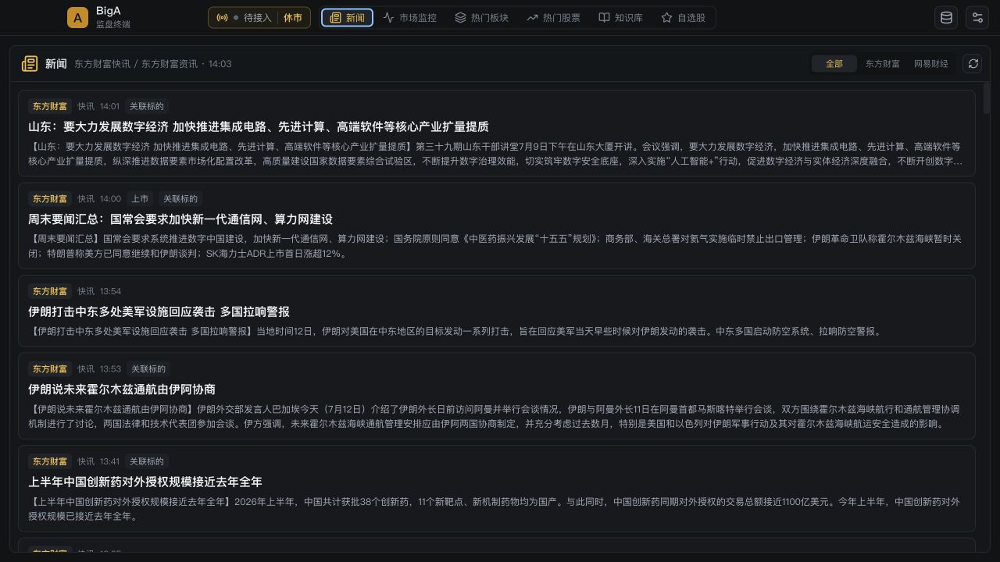

01
开盘前 / 盘中
先把市场温度看清楚。
上涨、下跌、涨跌停、炸板、连板高度和指数状态组成可解释的市场情绪，不把单一涨幅当成全部答案。
情绪温度68偏暖
A-SHARE DESKTOP TERMINAL
BigA 把市场情绪、板块资金、个股分时和龙虎榜放回同一条观察路径。少一点跳转，给判断留出更多空间。

KEEP THE CONTEXT
开盘后先看市场能否承接，再确认资金在哪些方向聚集，最后才进入个股。BigA 的六个工作区按这个节奏组织，关键信息不会藏在另一个窗口。
从工作流开始 →FROM MARKET TO A DECISION
不是推送买卖建议。BigA 提供事实、结构和回放，最终判断仍然在你手里。
开盘前 / 盘中
上涨、下跌、涨跌停、炸板、连板高度和指数状态组成可解释的市场情绪，不把单一涨幅当成全部答案。
确认方向
热门板块把涨幅、资金、扩散度和龙头确认放在同一行；行业轮动记录连续流入、流出与资金加速度。
进入个股
分时完整覆盖 A 股交易时段，午盘边界、昨收 0% 线和涨跌停范围清楚可见；日周月 K 与指标、F10 和新闻并列。
REPEATABLE, NOT NOISY
宽屏时可折叠两侧面板，把空间交给图表。悬停查看 K 线细节，单击锁定，再用方向键在周期中切换。滚轮缩放已被禁用，避免盘中误触。
了解数据处理 →分时、日线、周线、月线，支持前复权、不复权、后复权，搭配 VOL、MACD、RSI、KDJ 与 MA。
合并同席位买卖，支持机构、游资、营业部筛选与排序。日 K 与分时展示公开 B/S 和推演标记。
52 个术语、六类模式扫描、正反例、阈值实验和遮挡回放训练，让概念回到真实的价格与量能上。
BUILT AROUND REAL WORK
不需要先装一堆插件。每个模块围绕应用当前真实实现，使用同一套股票、行情、缓存和自选状态。
东方财富快讯与资讯为主、网易财经兜底。文章正文、关联标的、公司资料、公告和财务趋势都留在同一处。
新闻二级页会尽可能拉取完整正文，正文使用居中的阅读列展示。
阅读全文 →短线、趋势、观察、持仓分组，本地标签、排序、CSV/JSON 导入导出，以及跨页面即时同步。
价格、量比、成交额、均线、开板和板块异动等 12 类规则，带边沿触发和冷却去重。
深色、浅色与金融金、量化蓝、墨玉青、朱砂红主题。涨红跌绿语义始终固定。
DATA WITH A CLEAR BOUNDARY
BigA 是只读监盘工具，不提供下单，不把来源、延迟和回退情况藏起来。行情状态会明确显示实时、延迟、陈旧、回退、异常与休市。
请求统一经过超时、重试、熔断、去重与上下文失效保护。接口缺失时不会把本机时间伪装成实时。
GET STARTED
下载桌面端直接使用，或从源码启动开发环境。
$ git clone https://github.com/webxiaobaiyu-droid/bigA.git
$ cd bigA && pnpm install
$ pnpm run devVue 代码由 Vite 热更新，Electron 主进程变更会自动重启。开发时无需反复构建。